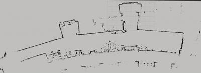

C++ Particle Filter
Fall 2025, Robotics Localization Project
C++
ROS2
Rviz2

About
The goal of this project was to implement a working Particle Filter in C++. A Particle Filter is a type of localization algorithm commonly used in robotics when the map of a robot is known, but not the specific location within the map. For instance, given a map of a house, we would like to determine where a Rumba robot is.